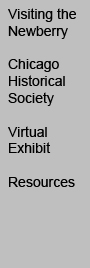

<!--  HTML fragment showing only the tags  relevant to your imagemap: img, map, area, and  /map. Copy and paste the entire map.../map block  into the body of your page. Copy and paste the provided  img tag, OR set a usemap attribute as shown on your own  img tag.--><map id="nav3" name="nav3">
<area shape="rect"#Visiting the Newberry
 coords="6,3,87,48" href="visitingexhibit/visiting_index.html" title="Visiting the Newberry" />
<area shape="rect"#Chicago Historical Society
 coords="6,55,71,110" href="aboutchs.html" title="Chicago Historical Society" />
<area shape="poly"#Virtual Exhibit
 coords="7,119,61,119,61,160,7,160" href="exhibit/exhibit_index.html" title="Virtual Exhibit" />
<area shape="rect"#Resources
 coords="4,171,78,199" href="additional.html" title="Resources" />
<area shape="default" nohref="nohref" alt="" />
</map>
